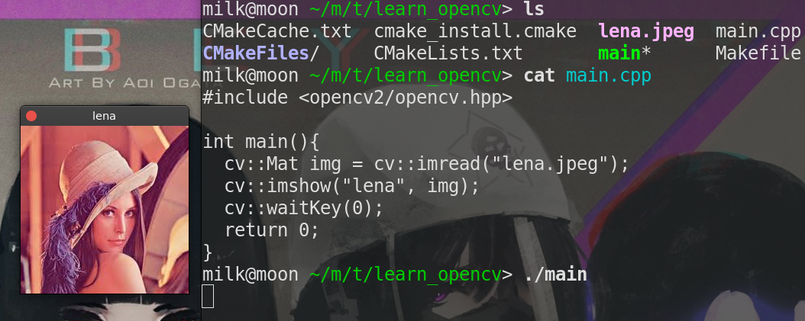

使用gcc与CMake编写OpenCV代码
- categories
- >
- OpenCV
写在前面
我一开始使用 CLion 开发工具，发现需要配置 CMake，真的心累！
不过好在有官方文档护驾！
遇事不决，官方文档！
参考
关于 CMake 的配置
编辑 CMakeLists.txt 文件
我根据官方文档修改后：
cmake_minimum_required(VERSION 2.8)
project( first )
find_package( OpenCV REQUIRED )
include_directories( ${OpenCV_INCLUDE_DIRS} )
add_executable( main main.cpp )
target_link_libraries( main ${OpenCV_LIBS} )参数说明：cmake_minmum_required：顾名思义，cmake 最小版本，没有特殊要求
project：你的项目名称，自定义修改，我取名为 first
find_package：查找你的 OpenCV 库文件，提供给 include_directories，保持默认
include_directories：定位 OpenCV 库文件位置，保持默认
add_executable：添加可执行文件，main 表示生成可执行文件的名称，自定义修改；main.cpp 表示存在 main 函数的 cpp 文件，自定义修改
target_link_libraries：为目标文件(你的可执行文件)提供 OpenCV 链接库，其他默认
其他：比如我的可执行文件为 demo，那么可以这么修改
add_executable( demo main.cpp )
target_link_libraries( demo ${OpenCV_LIBS} )执行配置
cd你的工作目录 # 在哪写 main 函数的地方cmake .# 当前目录下执行 cmakemake# 生成可执行文件./main

其他
由于我对 CMake 不是十分了解，上述功能解释可能出错。仅供参考
comment:
- Valine
- LiveRe
- ChangYan